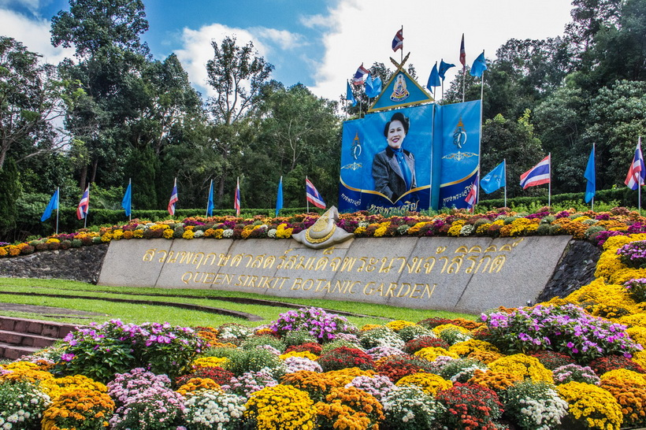

สวนพฤกษศาสตร์ คืออะไร
สวนพฤกษศาสตร์ คือ
แหล่งที่รวบรวมพันธุ์พืชชนิดต่างๆ ที่มีชีวิต จัดปลูกตามความเหมาะสมกับสภาพถิ่นอาศัยเดิม มีห้องสมุด สถานที่เก็บรวบรวมตัวอย่างพรรณไม้รักษาสภาพ อาจเป็นตัวอย่างแห้ง ตัวอย่างดอง หรือเก็บรักษาโดยวิธีอื่นๆ พันธุ์พืชที่ทำการเก็บรวบรวมไว้นั้น จะเป็นแหล่งข้อมูลและเผยแพร่ความรู้ นอกจากนี้สามารถใช้เป็นแหล่งพักผ่อนหย่อนใจ
สวนพฤกษศาสตร์โรงเรียน คือ
ทุกสิ่งทุกอย่างที่มีอยู่ในโรงเรียน ที่ใช้เพื่อการเรียนรู้โดยมีพืชเป็นปัจจัยหลัก ชีวภาพอื่นเป็นปัจจัยรอง กายภาพเป็นปัจจัยเสริม และวัสดุอุปกรณ์เป็นปัจจัยประกอบ
งานสวนพฤกษศาสตร์โรงเรียน คือ
งานสร้างจิตสำนึกในการอนุรักษ์พันธุกรรมพืช ทรัพยากรชีวภาพ และกายภาพ โดยมีการสัมผัส การเรียนรู้ การสร้างและปลูกฝังคุณธรรม การเสริมสร้างปัญญาและภูมิปัญญา
ที่มาและความสำคัญ
โครงการอนุรักษ์พันธุกรรมพืชอันเนื่องมาจากพระราชดำริ สมเด็จพระกนิษฐาธิราชเจ้า กรมสมเด็จพระเทพรัตนราชสุดาฯ สยามบรมราชกุมารี (อพ.สธ.) เป็นโครงการที่สมเด็จพระกนิษฐาธิราชเจ้า กรมสมเด็จพระเทพรัตนราชสุดาฯ สยามบรมราชกุมารี ทรงสืบสานพระราชปณิธานในการอนุรักษ์ทรัพยากรของพระบาทสมเด็จพระบรมชนกาธิเบศร มหาภูมิพลอดุลยเดชมหาราช บรมนาถบพิตร ซึ่งทรงมีสายพระเนตรยาวไกล โดยที่ พระบาทสมเด็จพระบรมชนกาธิเบศร มหาภูมิพลอดุลยเดชมหาราช บรมนาถบพิตร ทรงให้ความสำคัญและเห็นความสำคัญของการอนุรักษ์พันธุกรรมพืช ตัวอย่างที่เห็นได้ชัดดังในปี พ.ศ. 2503 ทรงอนุรักษ์ต้นยางนา ในปี พ.ศ. 2504 ทรงให้นำพรรณไม้จากภูมิภาคต่าง ๆ มาปลูกไว้ในสวนจิตรลดา เพื่อเป็นแหล่งศึกษา และทรงมีโครงการพระราชดำริที่เกี่ยวกับการอนุรักษ์พัฒนา ทรัพยากร พัฒนาแหล่งน้ำ การอนุรักษ์และพัฒนาดิน อนุรักษ์ทรัพยากรป่าไม้ เป็นการอนุรักษ์และพัฒนา ทรัพยากรธรรมชาติ ต่อมาในปี พ.ศ. 2535 สมเด็จพระกนิษฐาธิราชเจ้า กรมสมเด็จพระเทพรัตนราชสุดาฯ สยามบรมราชกุมารี ได้ทรงสืบสาน พระราชปณิธานต่อโดยมีพระราชดำริกับ นายแก้วขวัญ วัชโรทัย เลขาธิการพระราชวัง ให้ดำเนินการอนุรักษ์พืช พรรณของประเทศโดยพระราชทานให้โครงการส่วนพระองค์ฯ สวนจิตรลดา ฝ่ายวิชาการ เป็นผู้ดำเนินการจัดตั้ง ธนาคารพืชพรรณขึ้น ในปี พ.ศ. 2536-2549 โดยรับทุนสนับสนุนจากสำนักงานคณะกรรมการพิเศษเพื่อ ประสานงานโครงการอันเนื่องมาจากพระราชดำริ (กปร.) และเป็นหน่วยงานขึ้นตรงกับเลขาธิการพระราชวัง ตั้งแต่ปี พ.ศ. 2539 และต่อมาในปีงบประมาณ พ.ศ. 2550 สำนักพระราชวังดำเนินการจัดสรรงบประมาณให้ และให้ อพ.สธ. ดำเนินการแยกส่วนอย่างชัดเจนจากโครงการส่วนพระองค์ฯ สวนจิตรลดา การดำเนินงาน อพ.สธ. ดำเนินงานโดยอยู่ภายใต้แผนแม่บทซึ่งเป็นระยะ ๆ ละ 5 ปี ตั้งแต่ปี พ.ศ. 2535 เป็นต้นมาจนมาถึง แผนที่หก จึงเรียกว่าแผนแม่บท อพ.สธ. ระยะ 5 ปีที่หก
การดำเนินงาน อพ.สธ. ตั้งแต่ปี พ.ศ. 2535 จนถึงปัจจุบันมีหน่วยงานต่าง ๆ ร่วมสนองพระราชดำริ เพิ่มขึ้นมากกว่า 776 หน่วยงาน สมาชิกสวนพฤกษศาสตร์โรงเรียนซึ่งเป็นสถานศึกษาเป็นสมาชิกมากกว่า 3,028 โรงเรียน (ข้อมูล ณ วันที่ 4 กรกฎาคม 2560) ยิ่งไปกว่านั้นในแผนแม่บทระยะ 5 ปีที่ห้า อพ.สธ. กรม ส่งเสริมการปกครองท้องถิ่นขอเข้าร่วมสนองพระราชดำริโดยพระราชานุญาตให้เป็นหน่วยงานที่ร่วมสนอง พระราชดำริ อพ.สธ. ในปีงบประมาณ 2558 โดยที่ทางกรมส่งเสริมการปกครองท้องถิ่น เป็นนโยบายสนับสนุน ให้องค์กรปกครองส่วนท้องถิ่นในการดำเนินงานฐานทรัพยากรท้องถิ่น ซึ่งดำเนินงานอยู่ภายใต้กรอบการสร้าง จิตสำนึก กิจกรรมที่ 8 กิจกรรมพิเศษสนับสนุนการอนุรักษ์ทรัพยากร โดยให้มีสมาชิกฐานทรัพยากรท้องถิ่นใน อำเภอละหนึ่งตำบล / หนึ่งเทศบาลเป็นอย่างน้อย โดยเริ่มต้นการสำรวจฐานทรัพยากรท้องถิ่นที่มีอยู่จริงว่ามี อะไรอยู่ที่ไหน และเริ่มการดูแลอนุรักษ์และใช้ประโยชน์อย่างยั่งยืนในทรัพยากรท้องถิ่นที่มีอยู่ นำไปสู่การ วางแผนพัฒนาตำบลบนพื้นฐานของทรัพยากรที่มีอยู่จริง โดยเริ่มตั้งแต่การสำรวจและการทำฐานข้อมูล ทรัพยากรท้องถิ่นซึ่งประกอบด้วย 3 ฐานทรัพยากรได้แก่ ทรัพยากรชีวภาพ (สิ่งที่มีชีวิต), ทรัพยากรกายภาพ (สิ่งที่ไม่มีชีวิต) และทรัพยากรวัฒนธรรมและภูมิปัญญา ด้วยเหตุนี้ทำให้พื้นที่และกิจกรรมดำเนินงานของโครงการฯ กระจายออกไปในภูมิภาคต่าง ๆ และมีการดำเนินงานที่หลากหลายมากขึ้นการดำเนินงานในแผน แม่บททุกระยะ 5 ปีที่ผ่านมาของ อพ.สธ. ได้ดำเนินการสอดคล้องกับแผนพัฒนาเศรษฐกิจและสังคมแห่งชาติมาโดยตลอด และในแผนแม่บทระยะ 5 ปีที่หกนี้ มีแนวทางดำเนินการที่สอดคล้องและสนับสนุนแผนพัฒนา เศรษฐกิจและสังคมแห่งชาติ ฉบับที่ 12 (ปีงบประมาณ พ.ศ. 2560 - 2564)
ซึ่งมีกรอบแนวคิดและหลักการใน การวางแผนที่สำคัญได้แก่ (1) การน้อมนำและประยุกต์ใช้หลักปรัชญาของเศรษฐกิจพอเพียง (2) คนเป็น ศูนย์กลางของการพัฒนาอย่างมีส่วนร่วม (3) การสนับสนุนและส่งเสริมแนวคิดการปฏิรูปประเทศ และ (4) การพัฒนาสู่ความมั่นคง มั่งคั่ง ยั่งยืน เพื่อให้สังคมอยู่ร่วมกันอย่างมีความสุข ซึ่งกรอบแนวความคิดทั้งสี่นั้นล้วน แต่ต้องดำเนินการภายใต้การดูแลรักษาทรัพยากรและการนำมาใช้ประโยชน์อย่างยั่งยืน ยิ่งไปกว่านั้น อพ.สธ. ยังมีกิจกรรมตามกรอบแผนแม่บท อพ.สธ. ที่สอดคล้องกับแผนการขับเคลื่อนและปฏิรูประบบวิจัยแบบบูรณา การของประเทศและกรอบยุทธศาสตร์การวิจัยแห่งชาติ 20 ปีทั้ง 7 ยุทธศาสตร์ ได้แก่ (1) ด้านความมั่นคง (2) ด้านการเกษตร (3) ด้านอุตสาหกรรม (4) ด้านสังคม (5) ด้านการแพทย์และสาธารณสุข (6) ด้านพลังงาน (7) ด้านทรัพยากรธรรมชาติและสิ่งแวดล้อม เพื่อให้ส่งผลประโยชน์ต่อประเทศชาติและประชาชนให้มากที่สุด เพื่อ การบริหารจัดการความรู้ผลงานวิจัย นวัตกรรม สิ่งประดิษฐ์ ทรัพยากร และภูมิปัญญาของประเทศ สู่การใช้ ประโยชน์เชิงพาณิชย์และสาธารณะ ด้วยยุทธวิธีที่เหมาะสมที่เข้าถึงประชาชนและประชาสังคมอย่างแพร่หลาย แผนแม่บท อพ.สธ. ระยะ 5 ปีที่หก (ตุลาคม พ.ศ. 2559-กันยายน พ.ศ. 2564) เป็นแผนแม่บทที่จัดทำ ขึ้น เพื่อใช้เป็นกรอบในการดำเนินงานตามแนวทางพระราชดำริ สมเด็จพระกนิษฐาธิราชเจ้า กรมสมเด็จพระเทพรัตนราชสุดาฯ สยามบรมราชกุมารี โดยมีหน่วยงานที่ร่วมสนองพระราชดำริเข้ามามีส่วนร่วมวางแผนงาน ทั้งในส่วนกลางและส่วนภูมิภาคทั่ว ประเทศไทย ทั้งภาครัฐและเอกชน ให้มีแนวทางดำเนินงานต่อเนื่องตามกรอบแผนแม่บทโดยเน้นการทำงานเข้าไปสร้างจิตสำนึกในการรักษาทรัพยากรตั้งแต่ในสถานศึกษาดำเนินงานในระดับท้องถิ่นในการทำฐานข้อมูล ทรัพยากรท้องถิ่นซึ่งประกอบด้วย 3 ฐานทรัพยากรได้แก่ ทรัพยากรชีวภาพ, ทรัพยากรกายภาพ และ ทรัพยากรวัฒนธรรมและภูมิปัญญา จากฐานข้อมูลดังกล่าวจะนำไปสู่การอนุรักษ์และใช้ประโยชน์อย่างยั่งยืน บนพื้นฐานของการมีจิตสำนึกในการอนุรักษ์ทรัพยากรที่มีอยู่ในประเทศไทยต่อไป